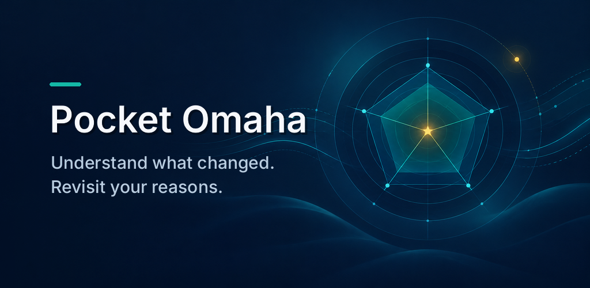
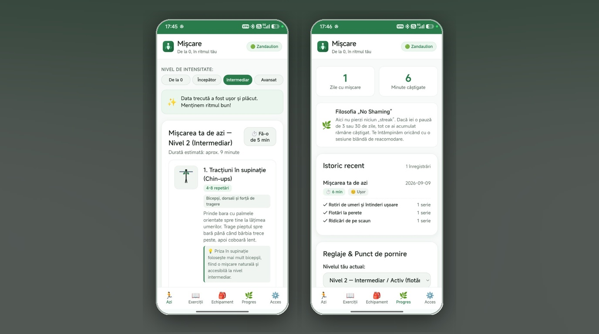
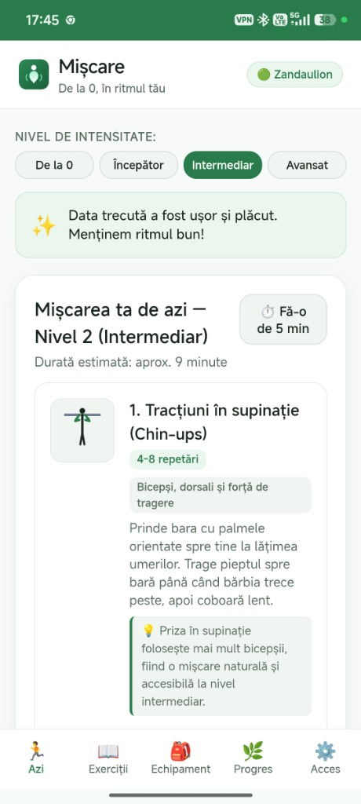
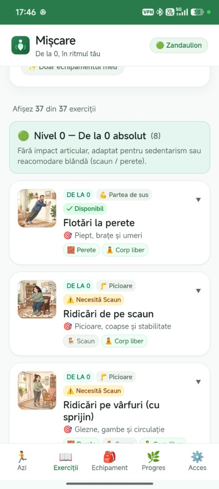
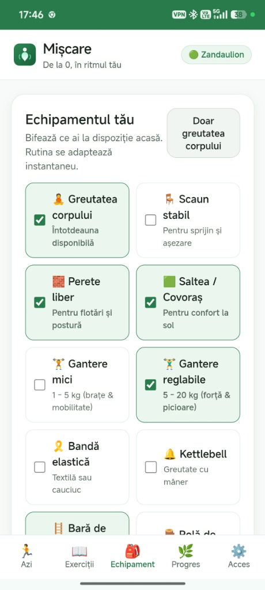
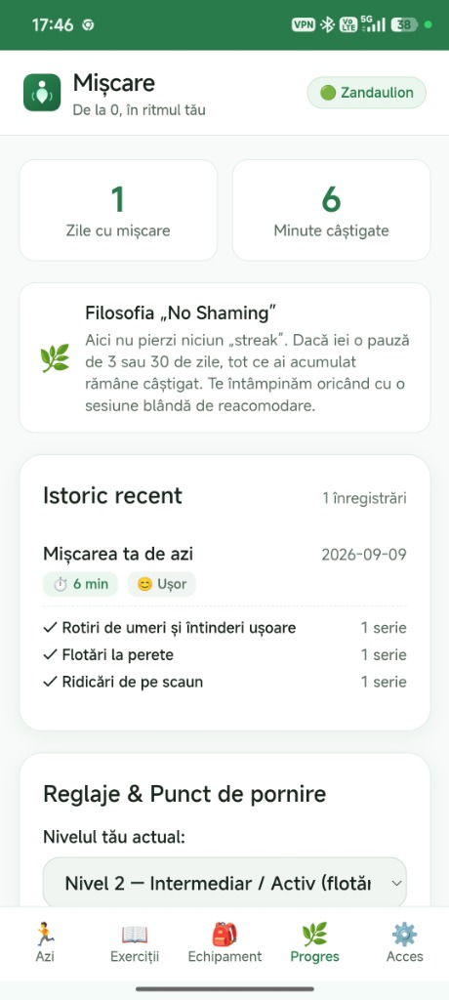

Outils du quotidien
Pocket Omaha
Comprenez ce qui a changé dans les entreprises que vous suivez. Revoyez vos raisons.
Trouvez un peu de mouvement pour aujourd’hui avec le matériel que vous avez déjà.

Mișcare 0.1.0 est un téléchargement Android à accès anticipé pour Android 7.0 ou version ultérieure. Il regroupe des routines guidées, 45 exercices illustrés, 12 langues d'interface et un journal d'entraînement local. Aucun compte, serveur ou autorisation Internet n'est requis.
L'application Android démarre avec des données locales distinctes ; il n'importe pas automatiquement l'historique PWA. L'importation JSON remplace le profil et le journal actuels. Voir le guide d'installation et de sauvegarde pour les sommes de contrôle, la compatibilité des signatures et la validation restante. Les rappels ne sont pas mis en œuvre.
Repartir de zéro. Déplacez-vous à votre rythme. Pas de culpabilité, juste un ajustement.
Mișcare est une application d'exercices adaptatifs avec une édition Android locale et une édition Web auto-hébergée. Il est conçu pour les débutants et les personnes revenant après une pause, avec des routines courtes, des choix d'équipement et un journal. La progression est un choix et les jours de repos ne comportent aucune pénalité de séquence de défaites.
À l'ouverture de l'application, les utilisateurs sont accueillis directement par « Session du jour » – prêts à être lancés en un seul clic. Si la vie est chargée, une option en un clic « Faites-en 5 minutes » raccourcit l'entraînement. Si la vie vous gêne pendant des jours, il n’y a pas de séquences interrompues ni de messages de culpabilité ; l'application vous accueille simplement avec une routine de rentrée en douceur.
Le PWA auto-hébergé utilise Vanilla JavaScript, Node.js et SQLite, avec des mises à jour pwa-kit et des invitations d'appareils pwa-invite-console. L'application Android regroupe l'interface et le moteur adaptatif dans Capacitor, stocke son profil et son journal localement dans IndexedDB et reçoit des mises à jour exécutables via l'installation de l'APK.




pwa-kit pour la mise en cache des techniciens de service axés sur le réseau, avec horodatage des versions de hachage du contenu et invites de mise à jour non perturbatrices.pwa-invite-console codes d'appariement (XXXX-YYYY-ZZZZ) émettant des jetons de session d'appareil sécurisés et de longue durée.Vanilla JavaScript (modules ES) sans surcharge d'étape de construction, propriétés personnalisées CSS réactives, synthèse audio Web personnalisée et mise en cache hors ligne de Service Worker.
Le PWA utilise Node.js 24, natif node:sqliteet les points de terminaison Express REST. La version Android exécute le moteur de routine partagé localement et ne nécessite aucun backend.
Compatibilité native du contrat avec pwa-kit pour la gestion du cycle de vie des versions et pwa-invite-console pour l'échange de jetons d'invitation et la gestion des appareils.